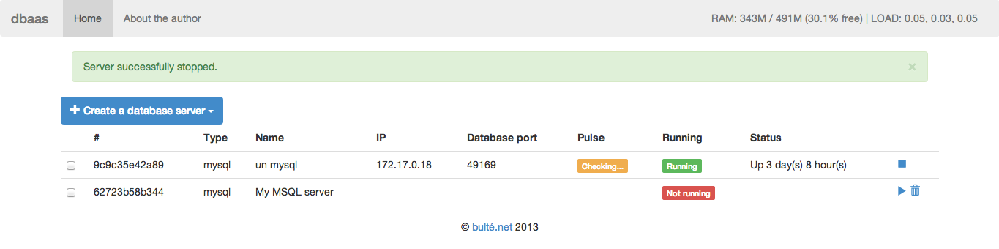

Update 16th december 2013: I may have found a better (working) approach to this problem via Dokku MariaDB plugin, see here for the list of plugins. Please feel free to comment on both approaches, as I may resume active development on this if some people are still interested.
What is Docker
Many great articles have already been written about Docker, so I'll be brief. Docker aims at providing a comfortable way to create and manage Linux containers (LXC). A container is a chroot on steroids allowing you to create complete virtual systems on your machine (much like a Virtual Machine but using fewer resources, see below). In pratice, Docker will boot and manage as many Linux systems as your machine can handle, in a lightweight way.
Some resources:
- Differences between Docker and a VM explained
- Docker interactive tutorial tutorial
- Docker documentation
Dokku, an Heroku-like PAAS
Based on top of Docker is another great product: Dokku. Dokku lets you run your very own PAAS (Platform As A Service) in minutes, à la Heroku. The idea behind those PAAS is quite simple: your code lives in a Git repo (as usual). When you push your code to a special branch (the PAAS's one), it is transferred on the remote server and automatically deployed. Since it's based on Docker, each application lives in its container, thus allowing you to run multiple stacks (one per application: Python, PHP, Node.js…) in multiple versions on the same server. Contrary to Heroku, your applications don't live in the Cloud but on your very own (probably physical) server.
Example: your PAAS is hosted on
myprivatepaas.com. You have an application living in a Git repository. Just do:git add remote myprivatepaas git@myprivatepaas.com:myapp git push myprivatepaas masterAnd bam! your app is available atmyapp.myprivatepaas.com
This is called Continuous deployment and it has proven to be an extremely powerful and agile way to deliver code and (not) administer servers. As a full-stack developer, I need to be able to properly and efficiently host and deliver my own developments and I love this way of doing things. That's why I have setup my private PAAS based on Dokku on which I can deploy any and all of my apps, without caring too much about server administration (only one to administer).
The missing part: databases
While Dokku is great to push and host your application code, it does not handle any data storage facilities (typically databases). Heroku does this through Addons attached to your apps, but this has no direct equivalent in Dokku.
A solution could have been to simply a MySQL and a MongoDB (the technologies I use most - or at least for MySQL the backend of the products I use most) on the server that hosts my PAAS and just create a database for each new project. But this does not feel very PAAS-sy. So instead I decided to build my own product to create and administer databases hosted on Docker containers. This product, or at least the beginning of it, is DBAAS.

In its current version, it lets you create, stop, restart and remove MySQL servers in Docker containers via a WebUI or a command line tool. The MongoDB features will be coming very soon since it's just the matter of a plugin. You can add your favorite DB easily too! The code is on Github. Once a container is created, DBAAS shows the necessary info to connect the database, and you're good to go.
What will come very soon, I hope:
- MongoDB features
- Automatic creation at deploy time, similar to Dotcloud features (databases declaration in dotcloud.yml) - via a Dokku plugin
Do you think this product will fit your own needs? Don't hesitate to contact me to share about it. I'm also a Freelancer in Paris available for this kind of tasks and others.